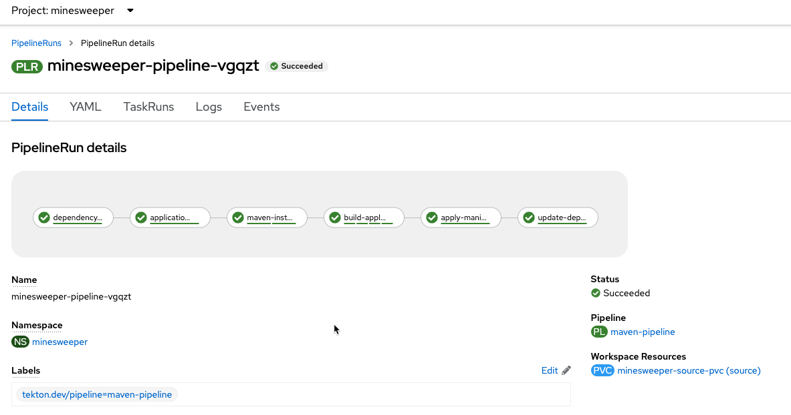
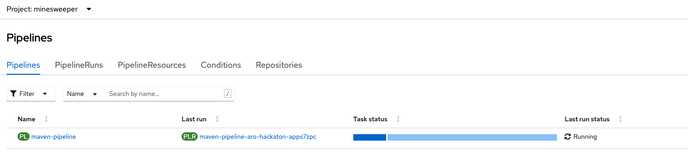

Automate Deploying the App with Tekton
Next, we'll automate deploying our application using the OpenShift Pipelines operator, which is based on the open source Tekton project.
If you would like to read more about OpenShift Pipelines, see the Red Hat documentation.
GitHub Account Required
This section of the workshop requires a personal GitHub account. If you do not have a GitHub account and do not wish to create one, you can skip this section and move to the next section.
Install the OpenShift Pipelines operator#
-
Return to your tab with the OpenShift Web Console. If you need to reauthenticate, follow the steps in the Access Your Cluster section.
-
Using the menu on the left Select Operator -> OperatorHub.

-
In the search box, search for "OpenShift Pipelines" and click on the Red Hat OpenShift Pipelines box.
-
Click on Install on the page that appears.
-
Accept the defaults that are presented and select Install to install the operator.
-
Allow the operator a few minutes to successfully install the OpenShift Pipelines operator into the cluster.
Configure the GitHub integration#
-
In your web browser, go to the following GitHub repositories:
Ensure you are logged in to GitHub and select the Fork button for both repositories and then choose your own GitHub account.
-
Next, browse to https://github.com/settings/tokens/new and create a new GitHub Personal Access Token. Set the Scope to "repo" and click Generate Token.
Warning
Do not forget to delete this token once the workshop is over.
-
Next, save the token to your Cloud Shell instance. To do so, run the following command, ensuring you replace the
INSERT_TOKEN_HEREwith your Personal Access Token: -
Then, save your GitHub username as a variable. To do so, run the following command, ensuring you replace the
GITHUB_USER_IDwith your GitHub username. -
Save these to your .workshoprc
-
Next, let's configure our Git CLI. To do so, run the following commands:
-
Next, we'll create a new working directory to clone our forked GitHub repositories. To do so, run the following commands:
Import tasks to our pipeline#
The next thing we need to do is import common tasks that our pipeline will use. These common tasks are designed to be reused across multiple pipelines.
-
Switch back to the
microsweeper-exproject from earlier -
Let's start by taking a look at the reusable tasks that we will be using. To do so, run the following command:
Expected output:
/home/user/gitops/aro-workshop-app/pipeline/tasks/1-git-clone.yaml /home/user/gitops/aro-workshop-app/pipeline/tasks/2-mvn.yaml /home/user/gitops/aro-workshop-app/pipeline/tasks/3-mvn-build-image.yaml /home/user/gitops/aro-workshop-app/pipeline/tasks/4-apply-manifest.yaml /home/user/gitops/aro-workshop-app/pipeline/tasks/5-update-deployment.yaml-
1-git-clone.yaml
Clones a given GitHub Repo. -
2-mvn.yaml
This Task can be used to run a Maven build -
3-mvn-build-image.yaml
Packages source with maven builds and into a container image, then pushes it to a container registry. Builds source into a container image using Project Atomic's Buildah build tool. It uses Buildah's support for building from Dockerfiles, using its buildah bud command.This command executes the directives in the Dockerfile to assemble a container image, then pushes that image to a container registry. -
4-apply-manifest.yaml
Applied manifest files to the cluster -
5-update-deployment.yaml
Updates a deployment with the new container image.
-
-
Next, we need to apply all of these tasks to our cluster. To do so, run the following command:
Your output should match this:
Configure Azure Container Registry#
-
Next we need to create an Azure Container Registry. To do so, run the following command:
-
Next, we need to create a secret to push and pull images into the Azure Container Registry. To do so, run the following command to retrieve the token:
-
Then, create the secret using the retrieved token. To do so, run the following command:
Configure our pipeline#
-
Next, create the pipeline service account and permissions that the pipeline tasks will run under. To do so, run the following command:
Your output should match this:
serviceaccount/pipeline configured secret/kube-api-secret created role.rbac.authorization.k8s.io/pipeline-role created rolebinding.rbac.authorization.k8s.io/pipeline-role-binding createdHowever it's okay if you see the error:
-
Next, we need to link the ACR credential secret we just created, so the service account can mount and pull images from ACR. To do so, run the following command:
-
Next, we should verify that our secret is linked to our service account, to do so, run the following command:
You should see the following output:
-
We need the microsweeper service account to also be able to use the acr-secret.
-
We also need to give the pipeline permission for certain privileged security context constraints to that it can execute builds. To grant these permissions, run the following command:
-
Create a persistent volume claim that the pipeline will use to store build images. To do so, run the following command:
-
Next, let's review the pipeline definition. To do so, open the following link in a new tab: https://github.com/rh-mobb/aro-hackaton-app/blob/main/pipeline/3-pipeline.yaml.
Browse through the file and notice all the tasks that are being executed. These are the tasks we imported in the previous step. The pipeline definition simply says which order the tasks are run and what parameters should be passed between tasks.
Update Application Settings#
-
Now that we have the source code forked, we need to copy the properties file we created in the previous section to our new code base. To do so, run the following command:
-
We also want to add the Quarkus Kubernetes extensions like we did earlier
-
Finally, let's commit our changes to GitHub. To do so, run the following set of commands:
-
In addition, let's go ahead and create a secret with our GitHub credentials that we will need later. To do so, run the following command:
-
Now let's proceed with creating our pipeline definition. To do so, run the following command:
-
Next, let's tell the deployment to use ACR instead of the built-in OpenShift image registry. To do so, run the following command:
-
Finally, we will create a pipeline run that will execute the pipeline, pull the code from your forked GitHub repositories, build the image, and deploy it to ARO. To do this, run the following command:
cat << EOF | oc create -f - apiVersion: tekton.dev/v1beta1 kind: PipelineRun metadata: generateName: minesweeper-pipeline- namespace: microsweeper-ex spec: pipelineRef: name: maven-pipeline serviceAccountName: pipeline params: - name: application-name value: microsweeper-appservice - name: dependency-git-url value: https://github.com/${GH_USER}/common-java-dependencies - name: application-git-url value: https://github.com/${GH_USER}/aro-workshop-app - name: dockerfile-path value: src/main/docker/Dockerfile.jvm - name: image-name value: mobbws${UNIQUE}.azurecr.io/minesweeper workspaces: - name: source persistentVolumeClaim: claimName: minesweeper-source-pvc EOF
Validate the pipeline#
Let's take a look at the OpenShift Web Console to see what was created and if the application was successfully deployed.
Make sure your Project is set to microsweeper-ex
-
From the OpenShift Web Console, click on Pipelines ->Tasks.
Notice the 5 tasks that we imported and click into them to view the YAML definitions.
-
Next, lets look at the Pipeline. Click on Pipelines. Notice that it is either still running, or the last run was successful. Click on maven-pipeline to view the pipeline details.

-
On the following screen, click on PipelineRuns to view the status of each Pipeline Run.

-
Lastly, click on the PipelineRun name and you can see all the details and steps of the pipeline. If your are curious, you can also view the logs of the different tasks that were run.

-
Watch the PipelineRun page as the tasks complete and the PipelineRun finishes.
Event Triggering#
At this point, we can successfully build and deploy new code by manually running our pipeline. But how can we configure the pipeline to run automatically when we commit code to Git? We can do so with an Event Listener and a Trigger.
-
Let's start by looking at the resources we will be creating to create our event listener and trigger.
Your output should match:
/home/user/gitops/aro-workshop-app/pipeline/tasks/event-listener/1-web-trigger-binding.yaml /home/user/gitops/aro-workshop-app/pipeline/tasks/event-listener/2-web-trigger-template.yaml /home/user/gitops/aro-workshop-app/pipeline/tasks/event-listener/3-web-trigger.yaml /home/user/gitops/aro-workshop-app/pipeline/tasks/event-listener/4-event-listener.yaml -
Take a look at the files listed:
-
1-web-trigger-binding.yamlThis TriggerBinding allows you to extract fields, such as the git repository name, git commit number, and the git repository URL in this case. To learn more about TriggerBindings, click here -
2-web-trigger-template.yamlThe TriggerTemplate specifies how the pipeline should be run. Browsing the file above, you will see there is a definition of the PipelineRun that looks exactly like the PipelineRun you create in the previous step. This is by design! ... it should be the same.
To learn more about TriggerTemplates, review the Tekton documentation.
3-web-trigger.yamlThe next file we have is the Trigger. The Trigger specifies what should happen when the EventListener detects an Event. Looking at this file, you will see that we are looking for 'Push' events that will create an instance of the TriggerTemplate that we just created. This in turn will start the PipelineRun.
To learn more about Triggers, review the Tekton documentation.
4-event-listenter.yamlThe last file we have is the Event Listener. An EventListener is a Kubernetes object that listens for events at a specified port on your OpenShift cluster. It exposes an OpenShift Route that receives incoming event and specifies one or more Triggers.
To learn more about EventListeners, review the Tekton documentation.
-
-
Edit
~/aro-workshop/pipelines/aro-workshop-app/pipeline/tasks/event-listener/2-web-trigger-template.yamlwith your favorite text editor (vim!) and replace the<>sections with the values of from the following command: -
Now that you have reviewed all the files, let's apply them to our cluster.
Before we test out our EventListener and Trigger, lets review what was created in OpenShift.
-
From the OpenShift console, under Pipelines, click on Triggers.
-
Browse the EventListener, TriggerTemplate and TriggerBindings that you just created.

The next thing we need to do, is connect our EventListener with Git. When an action, such as a git push, happens, git will need to call our EventListener to start the build and deploy process.
-
The first thing we need to do is expose our EventListener service to the internet. To do so, we'll run the
oc exposecommand:Note
Since this is public cluster, we can simply use the default ingress controller. For a private cluster, you might choose to use a service like Azure Front Door to expose the endpoint.
-
To get the URL of the Event Listener Route that we just created, run the following command:
For example, your output will look something similar to:
The last step we need to do, is configure GitHub to call this event listener URL when events occur.
From your browser, go to your personal GitHub aro-workshop-app repository, and click on Settings.

On the next screen, click on Webhooks.

Click on the Add Webhook button.
On the next screen, enter the following settings:
- PayloadURL - enter the URL you got above (for example:
http://el-minesweeper-el-microsweeper-ex.apps.ce7l3kf6.eastus.aroapp.io) - ContentType - select application/json
- Secret - this your GitHub Personal Access Token (
echo $GH_PAT)
Where does the secret value come from?
Refer to the ~/aro-workshop/pipelines/aro-workshop-app/pipeline/tasks/event-listener/3-web-trigger.yaml file.
You will see the following snippet that contains the secret to access git.
interceptors:
- ref:
name: "github"
params:
- name: "secretRef"
value:
secretName: gitsecret
secretKey: secretToken
- name: "eventTypes"
value: ["push"]
The secret you enter here for the git webhook, needs to match the value for the secretToken key of the a secret named gitsecret. If you remember in the previous step, we create this secret and used your git token as this value.
Keep the remaining defaults, and click Add webhook.

Test the Event Triggering#
Now that we have our trigger, eventlistener and git webhook setup, lets test it out.
Make sure you are in the directory for your personal git repo where the application is, and edit the ./src/main/resources/META-INF/resources/index.html file.
Search for Leaderboard and change it to \<YOUR NAME> Leaderboard.

Now commit and push the change
Pushing the change to the your git repository will kick of the event listener which will start the pipeline.
As a bonus, if you want to look at the logs of the event listener, you can use the tekton (tkn) cli.

Quickly switch over to your OpenShift Web Console, and watch the pipeline run.

Once the pipeline finishes, check out the change.
From the OpenShift Web Console, click on Networking -> Routes.
Hopefully, you will see the updated application with a new title for the leaderboard!